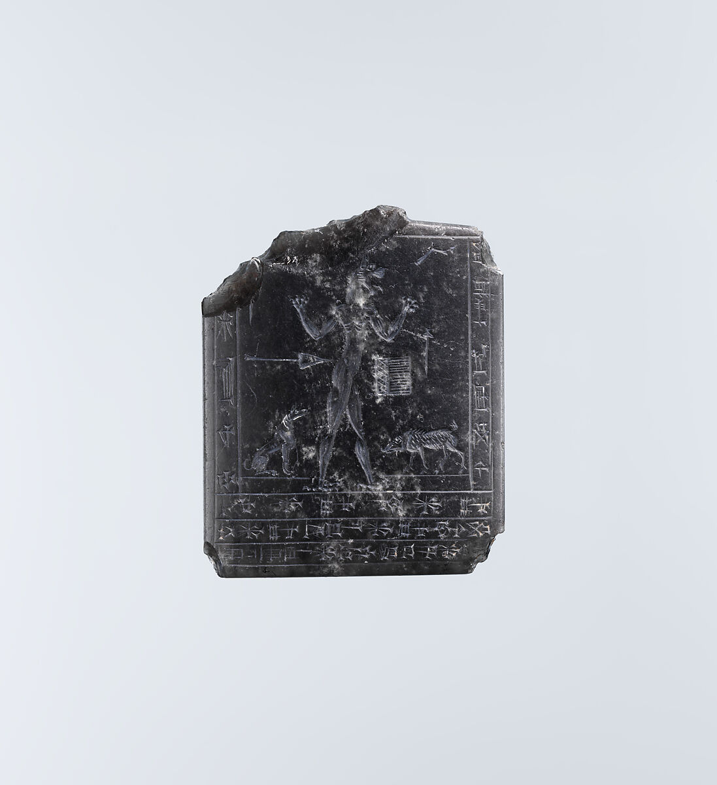
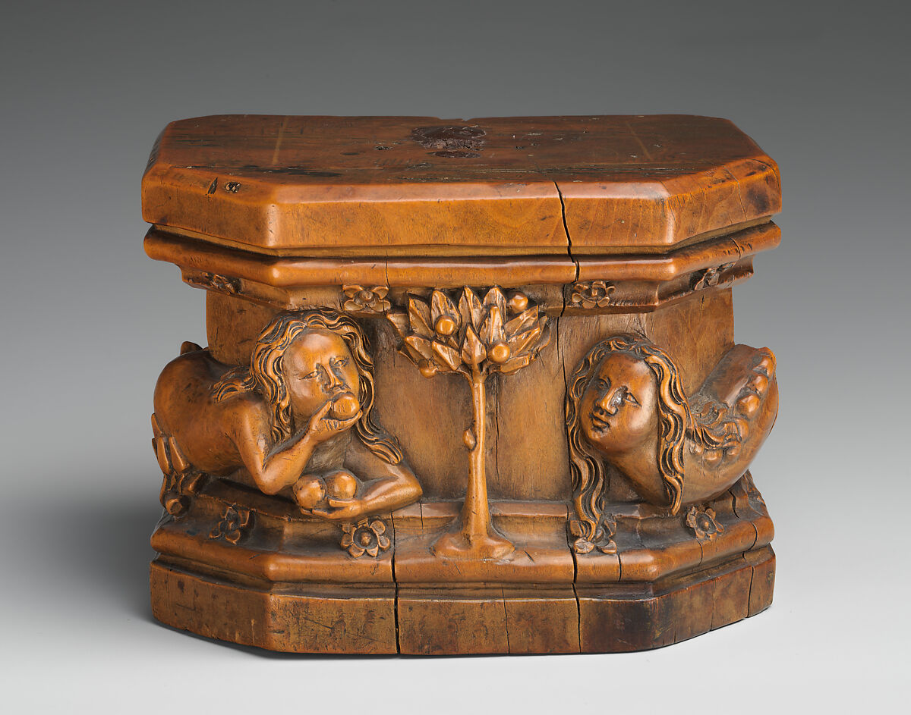
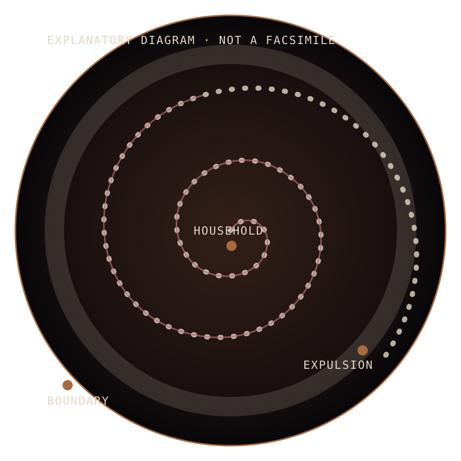
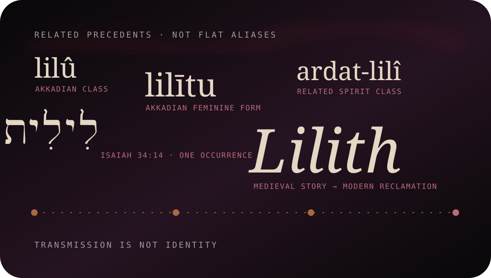

lilû / lilītu
Akkadian masculine and feminine members of a supernatural class. The linguistic relation matters; it does not carry the full medieval biography backward in time. S04
A name before a biography · dossier AAT-1524
Lilith is not one unchanged person moving cleanly from Sumer to the present. She is a long transmission of related words, wilderness beings, ritual fears, medieval stories, cosmologies, art, political reclamations, and fictional descendants.
The image behind this threshold is Lady Lilith (1867), a Victorian interpretation—not an ancient likeness. S35
Follow the name ↓The Hebrew witness
Isaiah 34:14
lîlît · a single biblical occurrence
The verse places lîlît among creatures inhabiting a devastated landscape. Its lexical meaning remains disputed. S11S12
Related ancient evidence
Second–first millennia BCE
Akkadian masculine and feminine members of a supernatural class. The linguistic relation matters; it does not carry the full medieval biography backward in time. S04
A young-woman spirit associated with an interrupted life cycle and threatening relations to young men. Related does not mean interchangeable. S05
The figure in the halub-tree episode was famously translated as Lilith by Samuel Noah Kramer; the current Oxford translation chooses “phantom maid,” preserving the uncertainty. S01S03

Lamashtu is a separately named Mesopotamian demon or demigoddess with her own parentage, ritual texts, and iconography. She appears here because later summaries often collapse different female demons into one imagined origin. S07
Unknown maker · Amulet with a Lamashtu demon · early 1st millennium BCE · The Met 1984.348 · Public Domain

The Met proposes that this South Netherlandish woman-headed serpent may represent Lilith. The identification is uncertain and belongs to later medieval reception, not ancient Mesopotamia. Object record
Unknown South Netherlandish maker · Base for a Statuette · 1470–80 · The Met 55.116.2 · Public Domain
Late antique Jewish texts
Rabbinic fragments
Rabbinic literature gives attributes and dangers, not the later first-wife plot. The empty center matters: combining every fragment into one life story creates a text that no single source contains.
A passage invokes Lilith while discussing long hair. It is a comparison, not a complete physical description. S17
The text warns that one who sleeps alone may be seized by Lilith—evidence of nocturnal danger, not an Eden narrative. S17
A fetal form “in the likeness of Lilith” is described as winged. The passage concerns legal classification and abnormal birth imagery. S18
A fantastic narrative identifies Hurmin or Hormin as a son of Lilith. It belongs to a discrete wonder tale. S19

Late antique incantation bowls may name liliths in the plural and use binding, divorce, or expulsion language to protect households, pregnant people, and children. The diagram is explanatory—not a copied inscription or fake facsimile. S22S25
A new story enters the archive
The earliest surviving explicit narrative in which Lilith is created from earth alongside Adam, demands equality, speaks the divine name, leaves him, meets three angels, and enters a covenant belongs to the medieval Alphabet of Ben Sira. S26
Adam and Lilith are fashioned from earth, grounding her demand for equality inside this version.
Their dispute concerns status and sexual position; modern retellings often sanitize or universalize it.
Lilith pronounces the divine name and departs. The story turns knowledge into an exit.
Senoy, Sansenoy, and Semangelof find her but do not simply erase her refusal.
Infant danger and protective angel names are bound into the narrative's negotiated terms.
Later readers make this episode scripture, satire, folklore, feminist counter-story, or demonology—often without labeling the change.
Genre warning: the work is medieval, anonymous, bawdy, and widely treated as satirical or parodic. It is not the book of Genesis, not Talmud, and not an eyewitness biography. S27
Medieval cosmological system-building
Thirteenth century onward
Kabbalistic sources do not merely repeat Ben Sira. They place Lilith inside changing structures of evil, sexual danger, cosmic pairing, and the “other side.” Every connection below belongs to a dated source layer.
Never one fixed cosmological role.
A paired power in the left side's mythology. S30
Linked through first-wife reception and demon-offspring traditions, not one uniform text.
Double, rival, shadow, or danger depending on passage and interpreter. S31
Later demonological structures intensify the relation between sexuality, danger, and cosmic disorder.
Names are evidence
A controlled vocabulary

lîlît is the Hebrew form in Isaiah 34:14.
lilītu and ardat-lilî belong in the ancestry discussion, not the alias strip.
“First Wife” and “Night Hag” describe later receptions; they are not universal names.
The nineteenth-century mirror
Rossetti's Lilith combs her abundant hair before a mirror, surrounded by flowers and enclosed in the Victorian language of beauty, danger, self-absorption, and the femme fatale. This is reception history: Goethe and medieval legend refracted through nineteenth-century gender anxiety and desire. S35S37
Dante Gabriel Rossetti and Henry Treffry Dunn, Lady Lilith, 1867. Watercolor and gouache. The Metropolitan Museum of Art, 08.162.1. Public Domain. Displayed as Victorian reception only.
Reclamation and living interpretation
Twentieth–twenty-first centuries
Judith Plaskow's 1972 “The Coming of Lilith” creatively rewrites the inherited conflict around equality, relationship, and solidarity. It is modern interpretation, not recovered ancient biography. S33
Lilith magazine adopted the name for independent Jewish feminist journalism; Lilith Fair used it for a women-led touring music festival. Each reuse selects the refusal story, not the entire demonological archive. S34S50
Black Moon Lilith is an astrological lunar apogee calculation with mean, true/osculating, and interpolated variants. It is not an ancient planet, moon, goddess, or proof of an original Lilith cult. S48S49
Modern occult, Pagan, Luciferian, Satanic, therapeutic, and online uses vary by community. This dossier records attributable self-descriptions and scholarship; it does not declare one living practice authoritative for all practitioners.
Adaptation constellation
Verified through 25 July 2026
This is a verified starting register, not an “all appearances” claim. Copyrighted media are described and linked without reproducing their images, scripts, lyrics, clips, or game assets.
Goethe names Lilith as Adam's first wife and makes her hair a central danger during Walpurgis Night. Public-domain text
George MacDonald's theological fantasy turns Lilith into a cosmic figure of pride, death, refusal, and possible redemption. Public-domain edition
Rossetti's paintings and poem crystallize the Victorian beauty-and-danger reception used in the mirror layer above. Museum record
A sculptural Lilith clings upside-down to the wall and returns the viewer's gaze. The work is copyrighted; Omnilore links rather than reproduces it. The Met
Robert Rossen's film uses the name for a human character; it is a namesake, not a direct mythic Lilith adaptation. Official page
The series remakes Lilith as Madam Satan, combining demonological and feminist-revolt layers inside copyrighted fiction. Netflix Media Center
A Marvel character explicitly develops the demonic-mother layer. She is distinct from Marvel's other Lilith. Marvel
A separate Marvel character named Lilith; the shared name does not make the two Marvel characters one being. Marvel
A psychic Titan whose name belongs to a different fictional identity lineage. DC
Blizzard's Lilith is a demon, daughter of Hatred, co-creator of Sanctuary, and mother within that franchise's cosmology—not the medieval figure unchanged. Blizzard
Lilith the Siren is a science-fantasy character. The franchise uses the name, not the historical dossier as a literal identity. 2K
Contradiction chamber
Evidence beside interpretation
Wings, talons, owls, nudity, and older scholarly proposals made the relief a powerful modern visual shorthand.
The British Museum treats the identity as unresolved and points to Ishtar/Inanna and Ereshkigal among major alternatives. The Queen of the Night is disputed—not a confirmed Lilith portrait. S09
Both traditions become associated with pregnancy, infancy, demons, and protective objects in later comparison.
Lamashtu is a named daughter of Anu with stable iconography. Similar function does not prove identity or direct descent.
lîlît occurs in Isaiah 34:14 amid wilderness inhabitants.
Transliteration, night creature, owl, and other renderings preserve different lexical judgments. No translation creates the medieval biography inside Isaiah.
Genesis 1 and 2 have long generated commentary about the relation between their accounts of human creation.
The named first-wife narrative is medieval. Calling Lilith “in Genesis” confuses later interpretation with the biblical text.
These themes had real ritual and social consequences and cannot be erased because modern readers prefer liberation.
Modern counter-midrash deliberately reads the medieval refusal story against patriarchal authority. It does not need to pretend the reading is ancient to be culturally real.